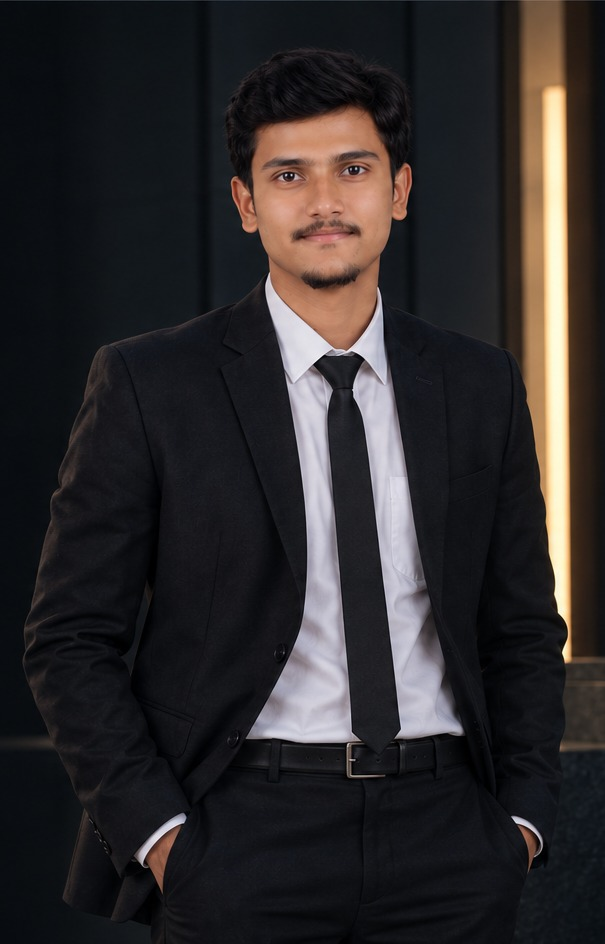

01
DeepLeaf — Plant Disease Detection & Diagnosis
Deep learning system for plant leaf disease detection using CNN and VGG-19 transfer learning, with preprocessing, augmentation, evaluation and a Gradio interface.
GitHub ↗
AI/ML-focused Computer Science & Engineering student working on computer vision, deep learning and practical intelligent applications.
I'm an AI/ML-focused engineering student who learns by building — from preparing datasets and training models to evaluating results and turning them into usable applications.
Computer vision & intelligent systems
Current CGPA · CSE
Don Bosco Institute of Technology
Internship → M.Tech → AI Engineering
My current stack combines machine learning, computer vision, Generative AI and web development — with a focus on learning through real projects.
Python
Java
Data Structures & Algorithms
CNN · VGG-19
Transfer Learning
TensorFlow / Keras
Scikit-learn
Model Evaluation
RAG
Prompt Engineering
LangChain
LLM Concepts
React
MySQL
Google Colab
Gradio
Git / GitHub
Deep learning system for plant leaf disease detection using CNN and VGG-19 transfer learning, with preprocessing, augmentation, evaluation and a Gradio interface.
GitHub ↗Digital platform designed to simplify event coordination by managing event details, registrations and notifications.
GitHub ↗CNN-based image classifier for lemon leaf disease categories, focused on preprocessing quality and evaluation against a held-out test set.
GitHub ↗Image classification model that sorts waste into categories using a CNN, exploring real-world deployment constraints around sustainability.
GitHub ↗Classical machine-learning project predicting heart disease risk from patient data, evaluated with a classification report and confusion matrix.
GitHub ↗Don Bosco Institute of Technology, Bengaluru
VTU curriculum · CGPA: 8.95 · Currently in 7th semester.
Coursework and self-study focused on AI, ML, Deep Learning, Computer Vision and Generative AI / LLM tooling.
Targeting admission through Karnataka PGCET as the next step toward deeper specialization in AI/ML.
Open to AI/ML internships, collaborations and conversations around computer vision, applied machine learning and Generative AI.